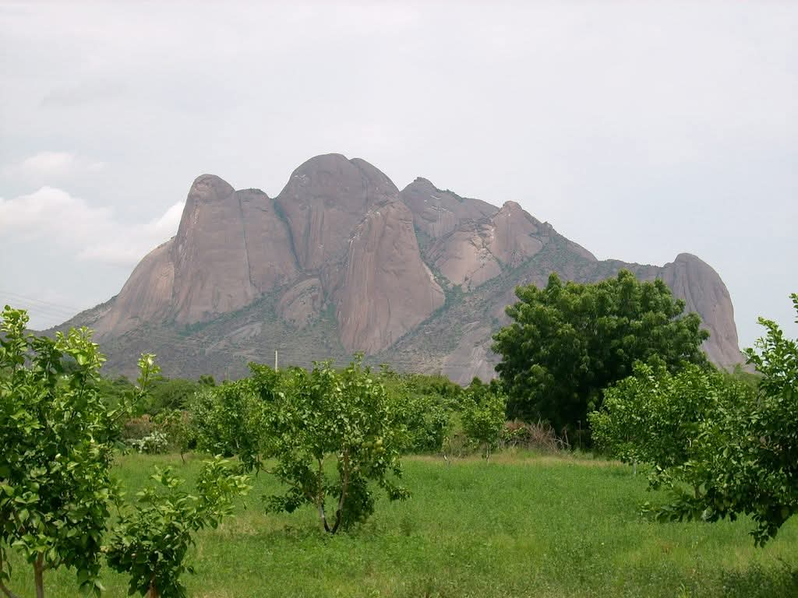
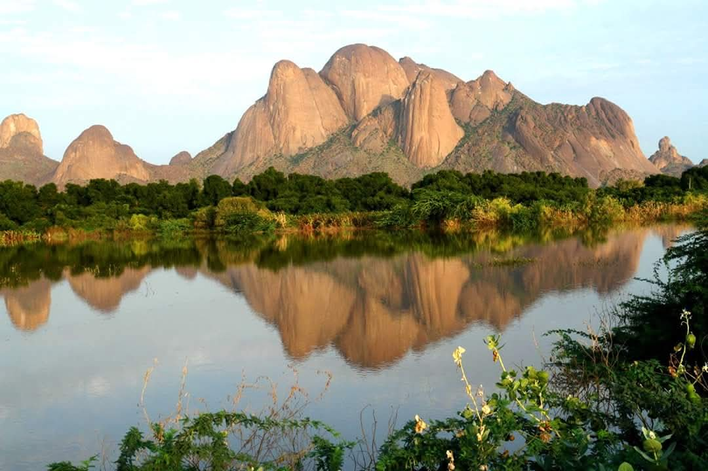
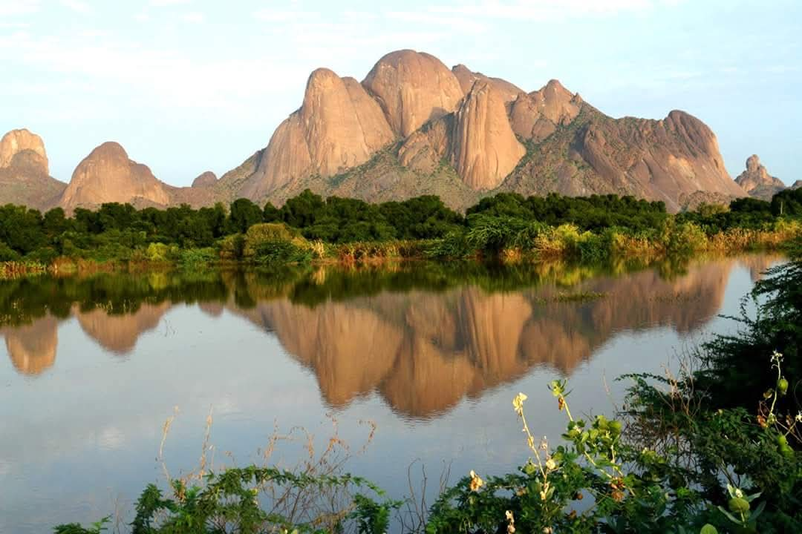
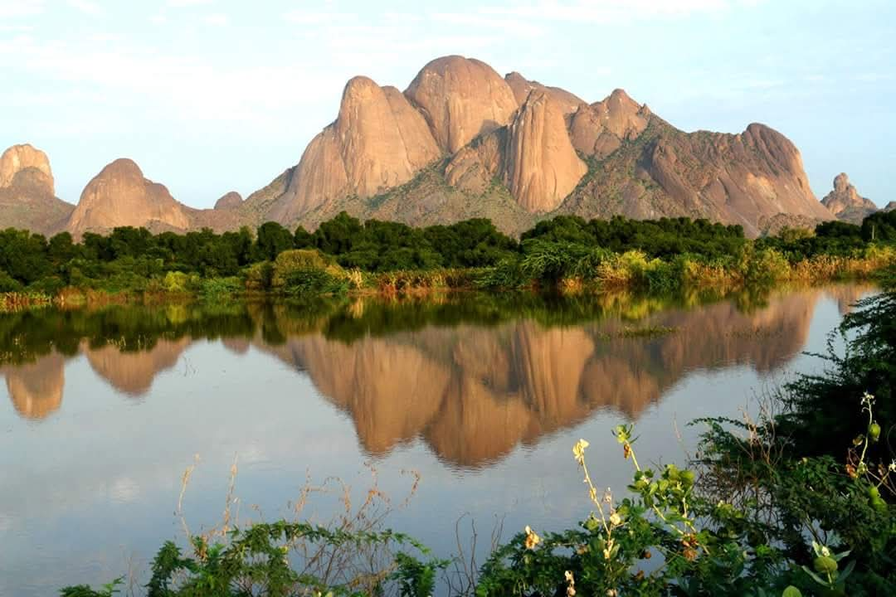

Tourism
Jebel Totil is a prominent tourist destination in eastern Sudan,
near the city of Kassala. Renowned for its breathtaking natural beauty and ecological diversity,
it is a popular spot for trips and picnics. The mountain offers various activities, including hiking,
visiting natural springs, and exploring wildlife and vegetation.
It is also an ideal location for photography enthusiasts,
thanks to its panoramic views of Kassala and its surrounding plains
Jebel Totil is a prominent tourist destination in eastern Sudan,
near the city of Kassala. Renowned for its breathtaking natural beauty and ecological diversity,
it is a popular spot for trips and picnics. The mountain offers various activities, including hiking,
visiting natural springs, and exploring wildlife and vegetation.
It is also an ideal location for photography enthusiasts,
thanks to its panoramic views of Kassala and its surrounding plains
Location
Jebel Totil is located south of Kassala, just about 4 kilometers away.
It is part of the famous Taka Mountain Range,
which enhances its significance as a unique natural landmark.
Jebel Totil is located south of Kassala, just about 4 kilometers away.
It is part of the famous Taka Mountain Range,
which enhances its significance as a unique natural landmark.
Historical and Cultural Significance
Jebel Totil holds great cultural and historical symbolism for the local population.
The area around the mountain hosts numerous local festivals
and traditional celebrations that showcase the region's heritage. Additionally,
the natural springs at its base serve as a vital source of drinking water and irrigation,
further highlighting its economic importance.
Jebel Totil holds great cultural and historical symbolism for the local population.
The area around the mountain hosts numerous local festivals
and traditional celebrations that showcase the region's heritage. Additionally,
the natural springs at its base serve as a vital source of drinking water and irrigation,
further highlighting its economic importance.
Visitor Tips
Choose favorable times for your visit, such as seasons with moderate weather, to avoid extreme heat.
Bring a camera to capture the stunning panoramic views.
Take time to visit the natural springs and enjoy the surrounding areas.
Choose favorable times for your visit, such as seasons with moderate weather,
to avoid extreme heat.
Choose favorable times for your visit, such as seasons with moderate weather, to avoid extreme heat.
Bring a camera to capture the stunning panoramic views.
Take time to visit the natural springs and enjoy the surrounding areas.
Choose favorable times for your visit, such as seasons with moderate weather,
to avoid extreme heat.
Gallery

 

